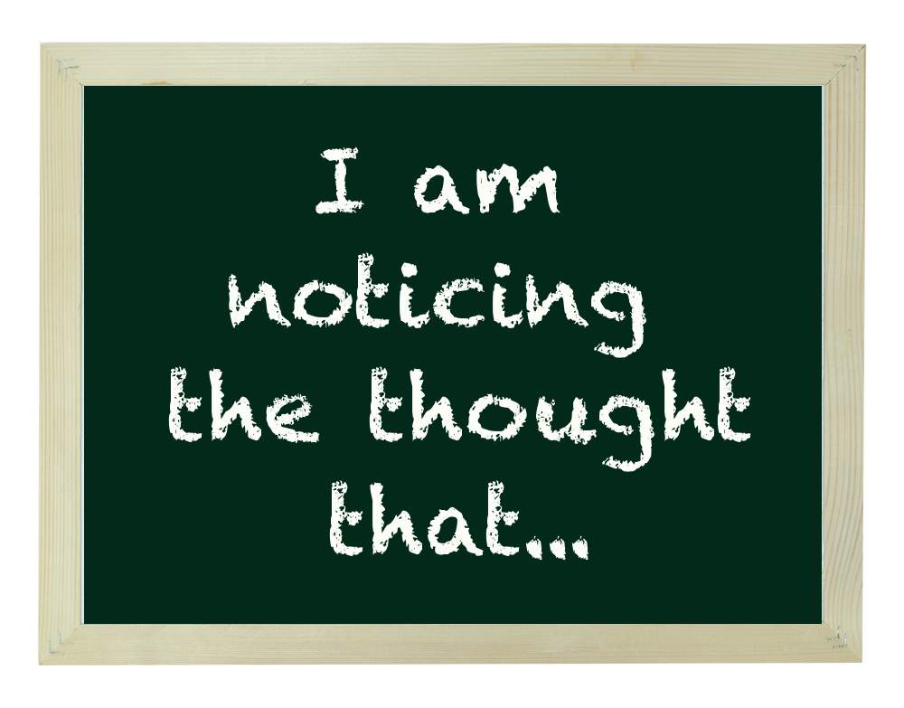

'STEPPING BACK'

This is a tool to help us get a little distance from our thinking. Simply place your thought at the end of this sentence, such as: 'I’m noticing the thought that I’m incapable of doing this'. Sentences like this are well known in a form of psychology called contextual psychology.
So, if the thought is 'Today is a bad day' then gently acknowledge, 'I'm noticing the thought that today is a bad day'. If the thought is 'I'm not good enough' then gently acknowledge, 'I'm noticing the thought that I'm not good enough'.
You won't get some distance from your unhelpful thinking without practice. Use this with any unhelpful thought and have a play around with it. Give it a go now...
What did you notice? You probably found that inserting this simple phrase gave you a little distance from the thought you were having. We often refer to this as 'stepping back'.
I was once at a psychology workshop, surrounded by therapists and clinicians from around the world. One of the important ideas of contextual psychology is to acknowledge what it’s really like to be human. This normalises it.
We formulated a list of our mind’s favourite attempts at self-defeat. 'I’m not good enough', 'I’m a failure' and 'I’m stupid' took the top three!
By the way, the 'I’m not good enough' story is common among many people from time to time, if not everyone. Other common unhelpful thoughts (which most people don't even talk about) are along the lines of 'I’m a failure' or 'I’m stupid'.
And what about you? Can you relate? Try this out and see if it helps.